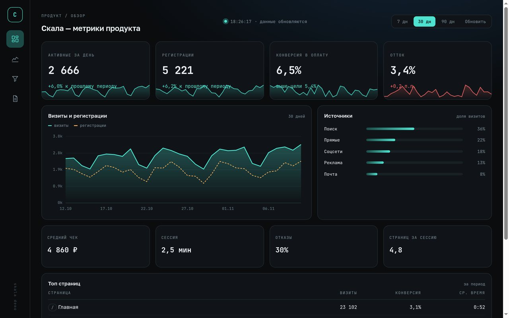
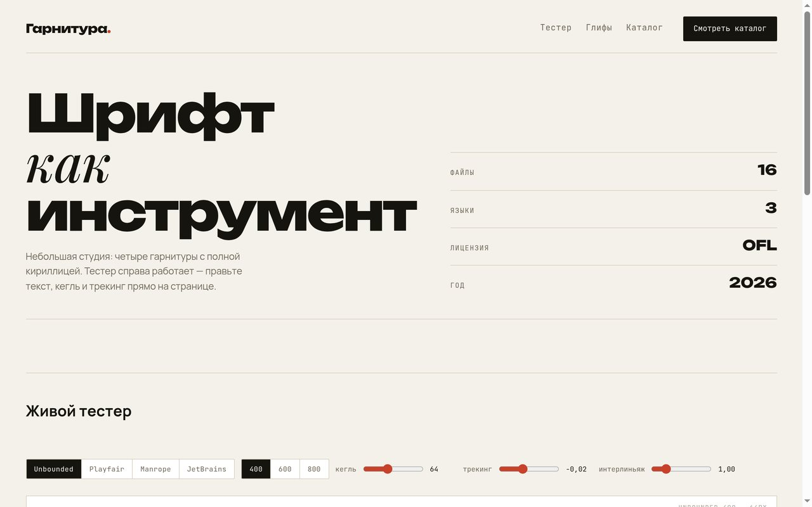
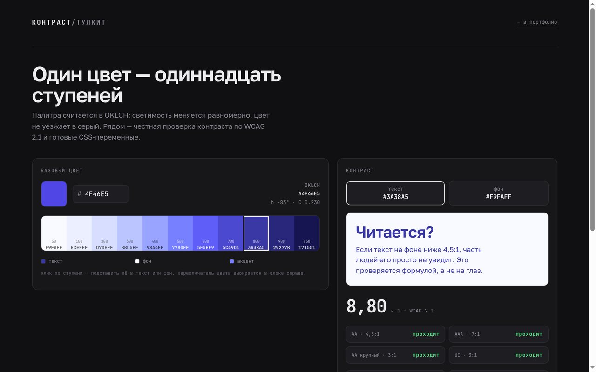

Вёрстка по макету
Figma, Sketch или PSD — в HTML и CSS. Отступы совпадают с макетом, шрифты подключены без скачков, сетка держится на любом зуме.
Москва · UTC+3 · беру 2–3 проекта в месяц
Лендинги и многостраничники по макетам из Figma, SEO-структура с первого дня и продвижение по коммерческим запросам. Адаптив от 320 px, семантика вместо «див-супа», одинаковый вид в Chrome, Safari и Firefox.
01 / услуги
От файла в Figma до сайта, который находят в поиске. Плюс чиню то, что сломалось у других.
Figma, Sketch или PSD — в HTML и CSS. Отступы совпадают с макетом, шрифты подключены без скачков, сетка держится на любом зуме.
Сайт собирается сразу под поиск: одна страница — один интент, заголовки по иерархии, мета-теги, микроразметка, чистые URL, sitemap и robots. Переделывать после запуска не приходится.
Кластеры и семантика, технические ошибки, тексты под каждый запрос, Вебмастер и Метрика. Показываю позиции и заявки, а не «мы поработали».
Одна вёрстка на все размеры: от 320 px до широких мониторов. Проверяю на реальных устройствах, а не только в эмуляторе.
Слайдеры, модалки, табы, фильтры, валидация, канвас-графики. Ванильный JS; библиотеки — только когда без них дороже.
Сжатие картинок, WebP и AVIF, шрифты без сдвига текста, ноль лишних скриптов. Цель — зелёный Lighthouse и Core Web Vitals, а не «и так сойдёт».
Метрика и цели: заявки, звонки, переходы в мессенджеры. Видно, откуда пришёл клиент и какая страница приносит деньги.
Навигация с клавиатуры, видимый фокус, контраст по WCAG, подписи к полям и кнопкам. Сайтом пользуются все, а не только те, кому повезло со зрением.
Чиню сломанный адаптив, разбираю каскад, убираю нагромождение !important и технические ошибки, из-за которых сайт проседает.
Беру два-три проекта в месяц, чтобы не задерживать сроки.
02 / работы
Каждый кейс открывается живьём — с переключением на телефон, планшет и десктоп. Не скриншот в галерее.
 флагман
открыть кейс
флагман
открыть кейс
18 страниц, каталог по планировкам, калькулятор с квизом, блог и отдельная страница под каждый запрос.

открыть кейсKPI, график на canvas, источники и таблица страниц. Ховер-курсор, периоды 7/30/90, ноль библиотек.

открыть кейсЖивой тестер набора: кегль, трекинг, интерлиньяж, сетка глифов, копирование CSS.

открыть кейсШкала в OKLCH, проверка контраста по четырём критериям, подбор доступной пары, экспорт CSS.
 открыть кейс
открыть кейс
Три страницы, общие компоненты, единая сетка и один CSS-файл на весь сайт.
 открыть кейс
открыть кейс
Расписание с фильтром по направлениям, карточки тренеров, табы и аккордеон на чистом JS.
 открыть кейс
открыть кейс
Пять экранов, карточки сортов, форма заявки и появление блоков по скроллу.
 открыть кейс
открыть кейс
Табличная вёрстка, инлайновые стили, проверка в Gmail, Outlook и Почте Mail.ru.
свободно 2 слота в ноябре
03 / процесс
Шесть шагов. Каждый заканчивается чем-то, что можно открыть и потрогать.
Открываю Figma, проверяю сетку, состояния кнопок, наличие мобильной версии. Сразу говорю, чего не хватает.
Фиксированная сумма и дата сдачи до старта. Если объём вырастет по ходу — обсуждаем до того, как я это сверстаю.
Каждые два-три дня выкладываю промежуточный результат на тестовый адрес. Вы видите прогресс, а не ждёте месяц в тишине.
Разбиваю запросы по страницам, прописываю title и description, Schema.org, sitemap и robots. Страницы не конкурируют между собой в выдаче.
Чек-лист: устройства, браузеры, клавиатура, скорость, Lighthouse. Правки присылайте одним списком — внесу за раз.
Исходники, репозиторий, инструкция по правке текстов, регистрация в Вебмастере, Метрика и цели. Дальше 14 дней правлю мелочи бесплатно.
04 / цены
Вёрстка по готовому макету. SEO-структура и базовые мета-теги входят в цену, продвижение — отдельно.
Один экран или короткий лендинг: оффер, форма заявки, адаптив, мета-теги.
До восьми секций: слайдеры, модалки, аккордеоны, скорость, CMS по желанию.
От пяти страниц: общие компоненты, сборка, репозиторий с историей.
Скидка действует на все три пакета. Срочная работа и выходные — плюс 30%. Правка чужой вёрстки и SEO-аудит считаются по часам, продвижение — помесячно.
05 / обо мне
Руслан Качев. Верстаю и занимаюсь SEO — беру проект целиком, от макета до запуска.
Меня зовут Руслан. Верстаю сайты по макетам и занимаюсь SEO: структура, техническая часть, продвижение по коммерческим запросам. Работаю на фрилансе, беру проекты целиком — от файла в Figma до сайта, зарегистрированного в Вебмастере.
Не беру задачи, в которых не уверен: если для проекта нужен бэкенд или сложная логика — скажу сразу, а не посреди работы. Список инструментов в карточке честный: то, чем пользуюсь регулярно.
06 / вопросы
Если чего-то нет в списке — спросите в Telegram, отвечу без брифа на десять листов.
Ссылка на макет в Figma с доступом на просмотр, тексты и картинки в исходном качестве. Если мобильной версии в макете нет — сделаю адаптив на своё усмотрение и покажу до финала. Если макета нет совсем, соберу структуру по референсам и пообещаю «похоже», а не «пиксель в пиксель».
Техническая часть — да: семантические заголовки, title и description, микроразметка, sitemap, robots, скорость. Это закладывается при вёрстке. Само продвижение — отдельная работа: семантика, контент, ссылки, отчёты по позициям, оплата помесячно.
Да, 50% до старта и 50% после приёмки. На проектах дольше двух недель делим на три части.
Нет, я верстальщик и SEO-специалист. Если макета нет — могу посоветовать дизайнера или собрать страницу по референсу, но результат будет ближе к «похоже», чем к «пиксель в пиксель».
Правки в рамках согласованного макета входят в цену. Новые блоки и смена концепции — отдельная задача с отдельной оценкой. Границу проговариваем заранее, чтобы не спорить потом.
Репозиторий на GitHub плюс архив с готовыми файлами. Могу залить на ваш хостинг, настроить домен и HTTPS. 14 дней после сдачи мелкие правки бесплатно.
«Ваша Кухня» — клиентский сайт, здесь лежит его статическая копия для показа. Остальные стенды собраны как демонстрация: это не макеты-картинки, а работающие страницы с настоящей вёрсткой, скриптами и адаптивом. Исходники открыты.
07 / контакты
Пришлите ссылку на макет и желаемый срок — в ответ получите цену и дату сдачи. Нужен только SEO-аудит? Пришлите адрес сайта.